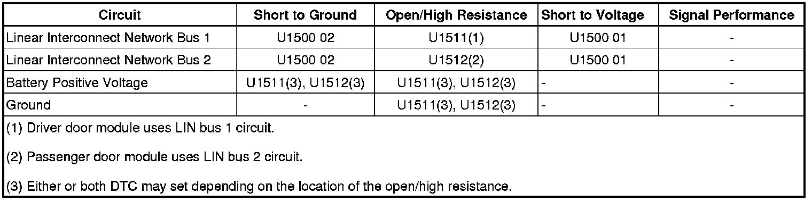

U1511
DTC U1500, U1511, U1512, or U1513
Diagnostic Instructions
* Perform the Diagnostic System Check - Vehicle (Initial Inspection and Diagnostic Overview) prior to using this diagnostic procedure.
* Review Strategy Based Diagnosis (Initial Inspection and Diagnostic Overview) for an overview of the diagnostic approach.
* Diagnostic Procedure Instructions (Initial Inspection and Diagnostic Overview) provides an overview of each diagnostic category.
DTC Descriptors
DTC U1500 01
- Inter-Device Dedicated Bus 1 Short to Battery
DTC U1500 02
- Inter-Device Dedicated Bus 1 Short to Ground
DTC U1511 00
- Inter-device Dedicated Bus Lost Communication With Device 1
DTC U1512 00
- Inter-device Dedicated Bus Lost Communication With Device 2
Diagnostic Fault Information

Circuit/System Description
The driver door module (DDM) and the front passenger door module (FPDM) communicate with window regulator motors on the local interconnect network bus 1 and the local interconnect network bus 2 circuits respectively. When the driver power window switch is activated to a desired position, the DDM examines the request and checks for messages from other vehicle control modules prohibiting window movement. If no prohibitive messages have been received, the DDM will send a LIN serial data message to the driver door window motor to move the window to the desired position.
When the DDM receives a request to operate one of the right side passenger windows from the driver master control, a GMLAN serial data message is sent to the PDM. The PDM examines the request and checks for messages from other vehicle control modules prohibiting the window movement. If no prohibitive messages have been received, the PDM will send a LIN serial data message to the appropriate window motor to move the window as requested.
The DDM and PDM supply their respective rear power window switches with a 12-volt reference and signal circuit. The rear power window switches contain separate resistors for each switch position. When a rear power window switch is activated, the associated door control module interprets the signal and checks for messages from other vehicle control modules prohibiting the window movement. If no prohibitive messages have been received, the door control module sends a LIN serial data message to the appropriate power window motor commanding the requested window position.
Conditions for Running the DTC
The system voltage is between 9-16 volts.
Conditions for Setting the DTC
U1511, U1512
The DTC will set when there is an open/high resistance in the local interconnect network bus circuit, or an open in the voltage or ground circuits of the motor.
U1500 02
When there is a short to ground in the local interconnect network bus circuit.
U1500 01
When there is a short to voltage in the local interconnect network bus circuit.
Action Taken When the DTC Sets
U1511, U1512
No window on the specific side of the vehicle will operate if the open is before the first splice from the door module, and both DTC should set. If open after the first splice, the individual window will be inoperative and a single DTC should set.
U1500
The individual LIN bus will be inoperative, disabling all windows on one side of the vehicle.
Conditions for Clearing the DTC
* The current DTC will clear when the malfunction is no longer present.
* A history DTC clears when the module ignition cycle counter reaches the reset threshold, without a repeat of the malfunction.
Diagnostic Aids
* A window regulator motor may cause a short to the local interconnect network bus circuit, and will cause all windows on one side to be inoperative.
* An open/high resistance between the door module and the first splice from the module will cause all windows on one side to be inoperative.
* An open/high resistance between the window regulator motor and the first splice from the motor will cause only one window to be inoperative.
* Use the DMM MIN/MAX function to capture/locate intermittent conditions.
Reference Information
Schematic Reference
Data Communication Schematics (Electrical Diagrams)
Connector End View Reference
Component Connector End Views (Connector Views)
Description and Operation
Data Link Communications Description and Operation (Description and Operation)
Electrical Information Reference
* Circuit Testing (Component Tests and General Diagnostics)
* Connector Repairs (Component Tests and General Diagnostics)
* Testing for Intermittent Conditions and Poor Connections (Component Tests and General Diagnostics)
* Wiring Repairs (Component Tests and General Diagnostics)
Scan Tool Reference
Control Module References (Programming and Relearning) for Scan Tool Information
Circuit/System Testing
1. Ignition OFF, disconnect the harness connector at the appropriate window motor.
2. Ignition OFF, test for less than 2.0 ohms of resistance between the ground circuit terminal 4 and ground.
• If greater than the specified range, test the ground circuit for an open/high resistance.
3. Ignition ON, verify a test lamp illuminates between the B+ circuit terminal 1 and ground.
• If the test lamp does not illuminate, test the B+ circuit for a short to ground or an open/high resistance.
4. Test for 6.0-7.0 volts between the LIN circuit terminal 6 and ground.
• If greater than the specified range, test the LIN circuit for a short to voltage. If the circuit tests normal, replace the applicable door module.
• If less than the specified range, test the LIN circuit for a short to ground or an open/high resistance. If the circuit tests normal, replace the applicable door module.
5. Ignition OFF, reconnect the harness connector at the window motor.
6. Ignition ON, observe the appropriate scan tool Window Motor Fault Status parameter while raising and lower the window. The parameter should read No Fault.
• If the parameter displays Not Normalized, refer to Window Regulator Motor Programming and Setup (Programming and Relearning) .
• If the parameter reads Motor Fault, Hall Fault, Memory Fault, LIN Fault, Anti-Trap Fault or Thermo Active, test or replace the appropriate power window motor.
7. If all circuits test normal, replace the appropriate door module.
Repair Instructions
Important: Each window regulator motor or front window and door lock switch, if replaced needs to be setup for proper operation.
Perform the Diagnostic Repair Verification (Verification Tests) after completing the repair.
Control Module References (Programming and Relearning) for window, and door lock switch (door module) or window regulator motor replacement, setup, and programming